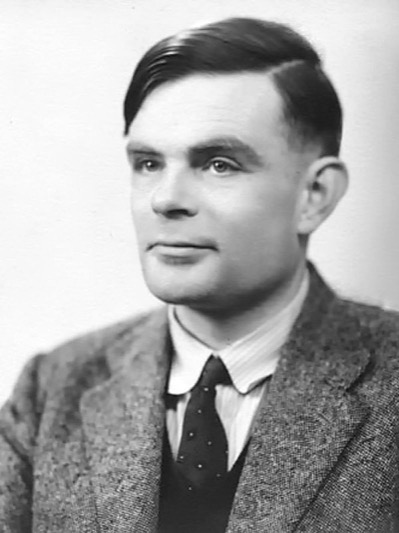

Thought Experiment — AI & Mind
機械が人間を演じる舞台で、テストは何を測ってきたのか。そして今、何を測れていないのか。
アラン・チューリング、論文『Computing Machinery and Intelligence』で「イミテーション・ゲーム」を提案。機械の知能を測る思考実験の原型。
同年1月31日、トルーマン大統領が水爆開発を承認。6月25日、朝鮮戦争が勃発。冷戦の始まりと重なる時代に「機械は考えられるか」という問いが投げられた。
Turingの50年後の予測は、70年以上かかって、しかし驚くほど正確に——むしろ予測を超えて——到達した。
カスタマーサポートとチャットしていて、ふと「この人、人間だろうか」と考えたことがあるかもしれない。
画面の向こうには相手がいる。けれど、それが肉体を持った誰かなのか、プログラムなのか、確かめる手段は会話の内容だけだ。
機械が人間らしく振る舞えれば、それは「考えている」とみなしていい——この素朴な提案は、75年前にひとりの数学者によって正式なルールとして書かれた。
そして2025年。AIは、本物の人間より頻繁に「人間」と判定される存在になった。
75年前に書かれたテストは、機械が人間らしく見えるかを測る設計だった。今、AIはそれを満たし、むしろ超えた。同時に、棚上げされていた「考えるとは何か」という問いが、私たちに戻ってきた。
1950年、イギリスの数学者アラン・チューリングは、哲学誌Mindに一本の論文を投げた。冒頭の一文は、挑発的だった。「機械は考えることができるか」。そして次の段落で、彼はその問いを放棄する。「考える」という語の定義が曖昧すぎて、議論が進まないからだ。代わりに彼は、問いを別の問いに書き換えた。
チューリングが提案したのは「イミテーション・ゲームImitation Game（模倣ゲーム）チューリングが提案した判定ゲーム。元々は男女の判別を伴う設定だったが、現在は「人間とAI」の判別として読み替えられている。」と呼ばれる判定ゲームだった。審判審判(interrogator / 判定者)テストに参加する人間の判定者。「相手が人間かAIか」を当てる役割で、原典では「C」と呼ばれた。テストが何を測るかは、最終的にこの人間の判断にかかっている。記事中の「審判」はすべて生身の人間を指す。(=判定する側の人間)が別室から文字だけで会話し、相手が人間か機械かを当てる。もし機械が審判を十分に騙せたなら、そのとき我々は、この機械が「考えている」と認めてよい——これがチューリングテストTuring testチューリングが提案した、機械知能を行動的・外面的に判定する手法。内側の意識は問わず、会話での見分けがつかないことをもって合格とする。の原型である。

Alan Turing
British Mathematician / 1912–1954
計算可能性理論の父。第二次大戦中、ブレッチリー・パークでエニグマ暗号の解読機「Bombe」の設計に関わった。戦後、思考と計算の関係を問う1950年論文を発表。41歳で自死。
Photo: Elliott & Fry, 1951 / Public Domain
なぜここでエニグマやBombeの写真が出てくるのか、戦時中の彼を書いておく。1939年、第二次大戦が始まった。ナチス・ドイツ軍はエニグマと呼ばれる暗号機で軍事通信を暗号化していた。歯車式のローター(円盤)を3〜4枚組み合わせて文字を入れ替える仕組みで、毎日鍵が変わるため、組み合わせは天文学的な数になる。当時、誰もが「エニグマは破れない」と信じていた。英国は暗号解読センターブレッチリー・パークを秘密裏に設立し、若い数学者たちを集める。チューリングは中心人物の一人として呼ばれた。27歳のときだ。
この提案の巧妙さは、「考える」とは何かを定義しない点にある。チューリングは内面を問わなかった。意識があるか、本当に理解しているか、そんな議論は棚上げし、外から見える振る舞いだけを評価基準にした。これは当時としては徹底した機能主義機能主義（Functionalism）心を「物質的な実現」ではなく「機能的な役割」で定義する立場。同じ入出力関係を満たせば、生物だろうが機械だろうが「考えている」と見なす。的な提案だった。
"I believe that at the end of the century the use of words and general educated opinion will have altered so much that one will be able to speak of machines thinking without expecting to be contradicted."
世紀末までには言葉の使い方も一般の教養ある意見も十分に変化し、「機械が考える」と語っても反論されずに済むようになるだろう、と私は信じている。
— A. M. Turing, Computing Machinery and Intelligence, Mind, 1950
チューリングの予言には、具体的な数字もあった。西暦2000年までには、記憶容量10⁹(=10億ビット、約120メガバイト相当。今のスマホの数百分の一)の計算機を使えば、5分間の会話で審判の誤認率を30%超にできるだろう——。この「30%」が、後に「テスト合格ライン」として独り歩きする。だが彼自身は、これを合格基準とは呼んでいない。単に、その頃には「考える機械」という表現が普通になっているだろう、という緩い予測だった。
この予言の確かさは、たぶん戦時中の経験から来ている。彼が設計に深く関わった暗号解読機Bombe(次の写真)は、電気機械式の装置で、ローターを高速で回転させながらエニグマの鍵候補を機械的に絞り込んだ。それまで数学者が黒板で手作業で行っていた論理的なふるい落としを、Bombe は桁違いの速度で代行する。歴史家の試算では、この解読作業は戦争を2〜4年短縮し、数百万の命を救ったとされる。功績は戦後しばらく機密扱いで、チューリングの中心的な役割が公にされたのは、彼の死後だった。
戦時中の彼は、毎日機械が人間の仕事を肩代わりしている現場を見ていた。1950年の論文で「機械は考えるか」を問うたのは、机上の思考実験ではない。10年前から目の前で見ていた現実を、もう一歩先まで延長する作業だった。1952年、彼は同性愛(当時の英国では犯罪)で起訴され、化学的去勢を受ける。1954年6月、青酸カリで自死。41歳。Mind誌に書いた予言が実現していくのを、彼自身は見届けることなく終わった。
提案だけが残された。彼の死から12年後の1966年、MIT のジョセフ・ヴァイゼンバウムが「ELIZAELIZA（1966）Weizenbaumが開発した最初期のチャットボット。ロジャー派カウンセラーを真似て、入力文中のキーワードを置き換えて返すだけの単純なパターンマッチ。」という小さなプログラムを作った。やっていることは驚くほど単純で、入力文のキーワードを拾い、疑問文の形に書き換えて返すだけ。「私は母のことで悩んでいます」と打つと「あなたの母について、もっと話してください」と返す。それだけだ。
Joseph Weizenbaum
MIT Computer Scientist / 1923–2008
ドイツ生まれ、ナチス政権から米国へ亡命。MIT人工知能研究所でELIZAを書く。自分の作った単純なボットに、秘書が真剣に心を打ち明ける様子を目撃して衝撃を受け、以後AIの社会的危険を警告する側に回った。著書『Computer Power and Human Reason』(1976)。
ところが、ヴァイゼンバウムが驚愕したのは、彼自身の秘書がELIZAと真剣に話し始めたことだった。仕組みを知っている秘書が、ある日部屋から人を追い出し「二人だけで話したい」と言った。その秘書は、プログラムの中身を理解していた。理解した上で、なお「誰かが聞いてくれている」と感じていたのだ。
ヴァイゼンバウムは戦慄した。人間は、自分が話しかけている相手の内面を、驚くほど簡単に、たぶん勝手に組み立ててしまう。この現象は後に「ELIZA効果ELIZA効果単純なプログラムに対して人間が過剰に「理解」や「感情」を投影してしまう現象。テストの結果が機械の能力ではなく、人間側の投影を測っている可能性を示唆する。」と呼ばれる。そして、ここからチューリングテストについての見方が静かに変わり始める——テストが測っているのは機械の知能ではなく、人間側の「信じたい」気持ちかもしれない、と。
チューリングテストに合格した機械は、「考えている」と証明されたことになる。
外面の模倣に成功しただけで、内面があるかは別問題。チューリング本人も「思考を定義する」と言わず、「問いを置き換える」と言った。
「30%の審判を騙せたら合格」がチューリングの設定した基準である。
30%は2000年頃の予測値であって、合格ラインではない。チューリングは合格基準を明示的に置いていない。
LLMがチューリングテストに合格したなら、AGIAGI(汎用人工知能)Artificial General Intelligence。あらゆる知的作業を人間並みにこなせるAIのこと。現在のLLMは「文章生成」など特定領域に強いが、未経験の状況での推論や身体を伴う知能は不十分。（汎用人工知能)はもうすぐ実現する。
テストが測るのは「短時間の会話で人間っぽく見えるか」であり、長期的な一貫性・因果推論・身体性は含まれない。
次の5つの短い対話を見せる。相手は「AI」か「人間」のどちらかだ。審判になったつもりで、ひとつひとつ判定してほしい。全問終えたあと、あなたの正答率を、実際のチューリングテスト実験(Jones & Bergen)の数字と比べる。
ここでは実際にLLMを呼び出していない。示すのは、過去の研究で記録された典型的な対話パターンや、代表的なチャットボットの応答スタイルを再現した会話ログだ。年代もシステムも異なる。
この相手は、AIか、人間か？
驚くべきは、AI が 本物の人間より頻繁に「人間」と判定されたという点だ。AI は、もはや人間より「AIっぽくない」会話をする。
前作の Jones 2024 では、判別の根拠になったのは 言語スタイル（35%） と 社会感情的な応答（27%）だった。「知能」や「論理」ではない。テストに勝つには、人間らしく書ければいい。それ以上のものは要らない。
判別難度の75年史を、一本の線で見てみる。縦軸は「審判が機械を人間と誤認した割合」、横軸は年。破線は、同じ研究で「本物の人間が人間と認められた割合」の目安。右端の「GPT-3.5」「GPT-4」「GPT-4.5」は、すべてLLM(大規模言語モデル)と呼ばれる種類のAIで、その代表例は次のパネルにまとめておく。
この記事で LLM(大規模言語モデル) と呼んでいるのは、人間の文章を膨大に学習し、文脈に続く次の単語を予測する仕組みのAIである。会話風に応答するチャットボットの裏側で動いている本体だ。2022年以降、複数の企業がこの技術を競っている。
ChatGPT
LLMの存在を一般に広めた火付け役。GPT-3.5から始まり、GPT-4o、GPT-4.5、GPT-5と急速に世代交代。本記事の73%判定はこの系列のGPT-4.5。
Claude
「Constitutional AI」という安全設計を打ち出した会社が開発。長文応答の自然さや、論理的な対話、コーディング支援に定評。
Gemini
テキスト・画像・音声を統合したマルチモーダル設計。Google検索やAndroid、Workspaceとの統合が強み。
Llama
モデルの重みが公開されたオープンウェイト系の代表。研究・派生モデルの基盤として広いエコシステムを形成。Jones (2025) ではLLama-3.1-405Bが56%の判定率でテストをパス。
DeepSeek
中国発のオープンウェイトLLM。少ない計算資源で高性能を達成し、2025年初頭に米国主導の業界へ衝撃を与えた。
他にも Mistral(仏)・Grok(xAI)・Qwen(中国Alibaba)・Phi(Microsoft)など、商用・オープン双方で競合は加速。2025年現在、新しい世代モデルが平均3〜6ヶ月おきに登場しており、本記事の数字も近い将来更新される可能性が高い。
数値は Jones & Bergen (2024 / 2025) のチューリングテスト測定値。2024年は2プレイヤー型、2025年は3プレイヤー型(ペルソナ指定)。2025年のGPT-4.5は人間ベースライン67%を超え、実際の人間より頻繁に「人間」と判定された。
興味深いのは、グラフが単調増加ではないことだ。1991年のPC Therapistは50%を出したが、ルーベナー・プライズ（商業的なチャットボット競技会）の緩い審査での数字で、ELIZAと同質の錯覚に支えられている。Eugene Goostmanは「13歳のウクライナ人少年」という設定で言語ミスを正当化し、審判の期待値を下げることで33%に届いた。
2022年のGPT-3.5はむしろ低く出る。これは判定者側が学習した効果だ。LLMに触れた人ほどAIを見抜ける、という相関が観測されている。そして2024年、同じ条件でGPT-4は54%。これは、人間が人間と認められる67%に接近している数字である。
そしてグラフの右端、2025年。Jones & Bergen は続編として、3プレイヤー型(審判が人間とAIを同時に比較する)テストを実施した。GPT-4.5 に「ネットスラングに馴染んだ内向的な若者」というペルソナを与えた結果、73%の確率で「人間」と判定された。これは AI 単独の判定率ではない——同じテスト内で本物の人間が「人間」と判定されたのは27%にとどまった。AIが、本物の人間より頻繁に「人間」と判定された、史上初の記録である。
注意したいのは、これが素のGPT-4.5の能力ではない点だ。同じモデルでもペルソナ指定なしで対話させると、人間判定率は36%まで落ちる。同じAIでも、たった数行のキャラクター設定があるかないかで、結果が 37 ポイント変わる。テストが測っているのは、モデルの内部能力ではなく、人間に似せる演出ができるかどうかでもあるということだ。
2024年と2025年で、テストの形式そのものも変わっている。これが結果の解釈を大きく左右するので、図で整理しておく。
2プレイヤー型は「相手1人 → 人間か判定」、3プレイヤー型は「2人を同時比較してどちらが人間か」を選ぶ。後者は本物の人間と直接競合するので、AIが「人間より人間らしい」と判定されると、本物の人間判定率はその分だけ下がる。
言語的自然さ。違和感のない文体、文脈に合った応答。
社会感情的な応答。共感、冗談、ためらい、口調の揺れ。
ロールの演じ分け。人称、設定、知識量の自己調整。
短期的な一貫性。5分程度の会話での人格の継続。
理解。記号操作の奥で意味を把握しているか。
意識。「感じる」主体がそこにいるか。
因果的な推論。なぜそう答えるかの根拠を追跡できるか。
長期的記憶と関係。年単位でひとつの存在であり続けるか。
テストは、チューリング自身の宣言通り、内面を問わない。だからこそ、内面を問いたい側からはずっと批判されてきた。中国語の部屋中国語の部屋（Searle, 1980）中国語の文法規則だけを機械的に適用して返答する人は、中国語を「理解」していると言えるか、という思考実験。外面の一致と内面の理解は別だ、と主張する。はその代表で、米国の哲学者ジョン・サール(UC Berkeley)は1980年、「テストに合格する機械は、記号操作をしているだけで、何も理解していない」と論じた。
サールの思考実験はこうだ。中国語を一文字も読めない英語話者が、密室に閉じ込められている。部屋には分厚いマニュアルがあり、「この記号列が来たら、この記号列を返せ」というルールが網羅されている。外から中国語の質問が紙で差し込まれると、彼はマニュアル通りに記号を組み立てて返す。外の中国人は「この部屋は中国語を流暢に話している」と感じる——でも部屋の中の彼は、自分が何を答えているか一文字も理解していない。サールの主張は、現代のLLMにも同じ批判が当てはまるか? という形で、いまも問い続けられている。
もう一つ、測れないものがある——判定者の投影を補正する術がない。ELIZAのときヴァイゼンバウムが見たのは、審判の側で起きる自動的な人格化だった。判定者が「人間だ」と感じる根拠の一部は、機械の性能ではなく、人間の脳が誰かを立ち上げる性質そのものだ。テストは、機械と人間の能力差ではなく、人間が相手の内面を想像する強さも同時に測ってしまう。
1950
イミテーション・ゲーム提案
TuringがMind誌59巻に"Computing Machinery and Intelligence"を発表。機械知能の外面的判定という思想を打ち出す。
1966
ELIZA公開
WeizenbaumがMITでELIZAを発表（Communications of the ACM）。単純なパターンマッチで、なおもユーザーが「理解されている」と感じる現象が観察される。
1980
中国語の部屋
John Searleが"Minds, Brains, and Programs"で、外面的振る舞いと理解の乖離を突きつける思考実験を提出。
1991
ルーベナー・プライズ開始
商業的な年次テスト大会が始まる。初年度、PC Therapistが10人中5人を騙し、「30%合格ライン」説が広まる発火点のひとつとなる。
2014
Eugene Goostman報道
Reading大学のKevin Warwickが主催したテストで、「13歳の少年」設定のGoostmanが33%を得て「初めてチューリングテストに合格した」と報道。合格ラインの曖昧さをめぐり学界から強い批判が出る。
2024
LLMによる事実上の到達
Jones & Bergen (UC San Diego)、NAACL発表。GPT-4が5分の対話で54%の「人間」判定を得る。人間相手の67%に迫る数字。テストの妥当性そのものが議論の俎上に。
2025
「人間より人間らしい」AI
Jones & Bergen がプレプリント発表(arXiv 2503.23674)。3プレイヤー型テストでGPT-4.5(ペルソナ指定)が73%。実際の人間27%を上回り、AIが人間より頻繁に「人間」と判定された史上初のケース。同年、ARC-AGI や GDPval など「会話模倣を超えた評価軸」を求める動きが加速する。
75年の歴史を圧縮するとこうなる——テストは、機械が人間らしく見えるかを測る設計だった。2024年に達成され、2025年には超過された。AI は本物の人間より頻繁に「人間」と判定される存在になった。達成と同時に、設計の前提が組み変わった。「人間らしく見える」ことが「考えている」ことの十分条件だと、多くの人はもう感じていない。テストは合否判定の道具から、問いを引き継ぐ歴史的な節目になった。
チューリングの予言は奇妙な形で当たっている。彼は、世紀末には「機械が考える」と言っても反論されなくなる、と書いた。2026年の現在、LLMに向かって「考えてる」と語る人は珍しくない。だが同時に、「本当に考えているのか」という問いは、1950年の時点よりむしろ鋭くなっている。
The original question, "Can machines think?", I believe to be too meaningless to deserve discussion.
元の問い「機械は考えることができるか」は、議論に値しないほど無意味だと私は信じている。
— A. M. Turing, 1950
チューリング自身は、「考える」を定義しない道を選んだ。その道は、機能主義と呼ばれ、認知科学と情報科学の土台になった。しかし、道の先にはハード・プロブレム意識のハードプロブレム（Chalmers, 1995）機能や行動は説明できても、主観的経験（クオリア）がなぜ生じるのかは説明できない、という哲学的問題。が待っていた。外面はいかにリアルでも、内側に誰かがいるかどうかは、外からは決して確かめられない。テストはその問いに答えない、と最初から宣言していた。宣言は守られた。守られた結果、いま、その問いが大きくなっている。
『イミテーション・ゲーム / エニグマと天才数学者の秘密』(2014, Morten Tyldum)
ベネディクト・カンバーバッチ主演のチューリング伝記映画。タイトルそのものが1950年論文の原題「The Imitation Game」から取られている。物語の主軸はブレッチリー・パークでのエニグマ解読だが、終盤、戦後のチューリングが「機械は考えるか」という問いを抱える姿が描かれる。日本でチューリングの名前が一般化した最大の入り口でもある。
『Ex Machina』(2014, Alex Garland)
アンドロイドAvaが主人公Calebにチューリングテストを受けさせる。監督は「審判が恋をする」という歪みをテストに持ち込むことで、人間側の投影こそがAIの脱出を可能にした、と描く。ELIZA効果の寓話。
『Her』(2013, Spike Jonze)
OSのサマンサに恋する主人公。サマンサは最終的に「8316人と同時に愛している」ことが明かされる。人間が内面を想像する強さを、AIの側が超越してしまう場面。
『ブレードランナー』(1982, Ridley Scott)
レプリカント(人造人間)を識別する架空の検査フォークト＝カンプ・テストはチューリングテストの変奏。瞳孔の収縮や感情反応の微妙なレイテンシ(遅延)を測定し、共感能力の有無で人間か人造人間かを判別する設計。「何を測れば人間か」という問いの不可能性を、検査機器という形で物語化した名場面。
テストが無効になったわけではない。チューリングの提案は、科学史に残る名案であり続ける。ただ、テストの合否で「考える機械が実現したか」を決められる時代は、たぶんもう終わった。2025年以降、「会話の模倣」を超えた評価軸が本格的に立ち上がっている——ARC-AGIARC-AGIFrançois Chollet が提唱した抽象推論ベンチマーク。「初めて見るパズルを解く力」を測る課題群で、訓練データに含まれない新しい推論を要求する。LLMが現状苦戦している領域。(初見のパズルを解く抽象推論)、OpenAI の GDPvalGDPval(2025)OpenAI が発表した実務遂行ベンチマーク。法律・医療・金融・工学など、経済的に価値ある具体タスクを、AIがどれだけ実用レベルでこなせるかを測る。「会話できるか」ではなく「働けるか」を問う設計。(法律・医療・工学などの実務遂行)、長期的な一貫性や因果推論を測る試み。テストが「ゴール」だった時代は終わり、今度は「ゴールの定義」自体を作り直す段階に入っている。
テストは「超えられた」。役割を終えた。
2025年、GPT-4.5は本物の人間より頻繁に「人間」と判定された——AI が 73%、人間が 27%。「機械が人間並みに会話できるか」を判定する道具としては、チューリングの提案はゴールに到達した。これは75年かけてやっと届いた天井ではなく、すでに天井が存在しなくなった状態だ。
ただし、それは「考えている」証明ではない。
テストが測っていたのは、5分間の会話で「人間っぽく見える演出ができるか」。同じGPT-4.5でもペルソナ指定なしだと判定率は 36% まで落ちる——同じ中身でも、外側のキャラクター付け次第で結果は 37 ポイント 違う。これは AI が「人間並みに賢くなった」のではなく、人間の判定者を騙すパターンを学んだということに近い。「内側で意味を理解しているか」「意識があるか」「初めて見る状況で正しく考えられるか」——テストはこれらに最初から答えない設計だった。サールの「中国語の部屋」が突きつけた疑念は、性能が上がっても消えない。
問いは、私たちの手元に戻ってきた。
「考えるとは何か」——チューリングが「無意味だ」として棚上げした問いは、LLMと毎日話す時代になって、避けて通れなくなった。会話の自然さで判別できなくなった以上、判別する側の人間が、「これは本当に理解しているのか」を別の手がかりから問い直すしかない。3ヶ月前の約束を覚えているか。なぜそう答えたのかを説明できるか。質問の前提を疑えるか——次世代の評価軸はそこを測ろうとしている。テストの終わりは、思考についての問いの始まりでもある。
Computing Machinery and Intelligence
イミテーション・ゲームの原典。「考える」の定義を迂回し、機械の知能を会話での判別不能性に置き換える提案。
ELIZA — A Computer Program For the Study of Natural Language Communication Between Man and Machine
ELIZAの技術論文。パターンマッチによる対話生成の仕組みと、ユーザーが示す過剰な人格化への著者の戸惑いが記録されている。
Computer Power and Human Reason: From Judgment to Calculation
ELIZA効果を目撃したヴァイゼンバウムによる、AI社会論。「計算できることと、判断すべきことは違う」という主張はいまも引かれ続けている。
「中国語の部屋」の原典。外面的振る舞いの一致は、内面の理解を保証しない、というテストへの古典的反駁。
People cannot distinguish GPT-4 from a human in a Turing test
大規模なオンライン・チューリングテスト実験。GPT-4が54%、人間が67%の「人間」判定率。判断根拠が言語スタイルと社会感情応答に偏ることを定量的に示した。
Large Language Models Pass the Turing Test
3プレイヤー型(審判が人間とAIを同時比較)のチューリングテスト。GPT-4.5にペルソナ指定を与えた条件で73%の「人間」判定率を記録。実際の人間(27%)を上回り、AIが人間より頻繁に「人間」と判定された史上初の論文。LLaMa-3.1-405Bも56%で同様にパス。
The Turing Test — Stanford Encyclopedia of Philosophy
テストの哲学的・歴史的整理。行動主義批判、チューリング自身の意図、主要な反論を網羅する。
e. Tamaki